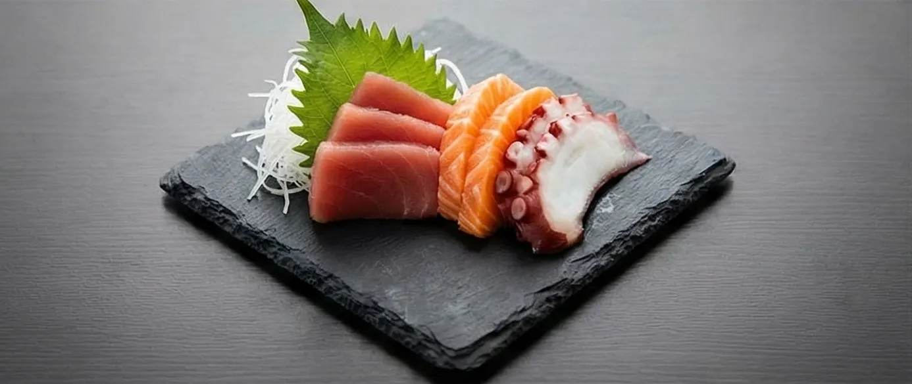
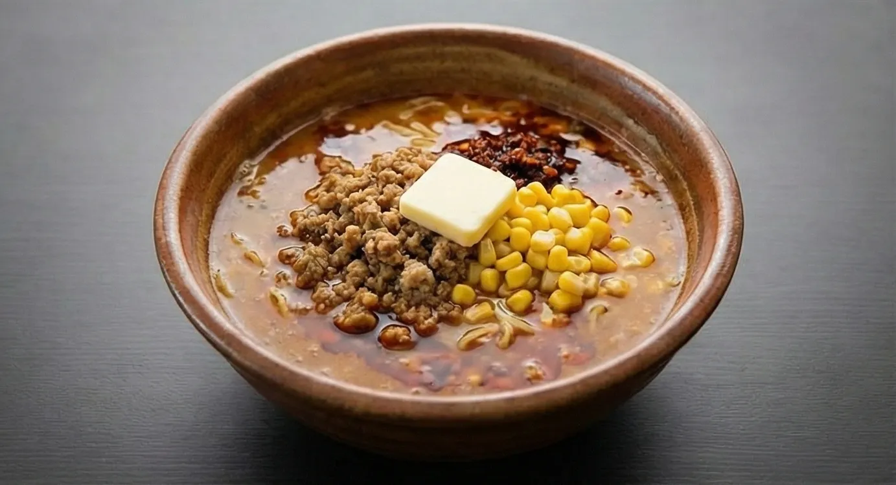
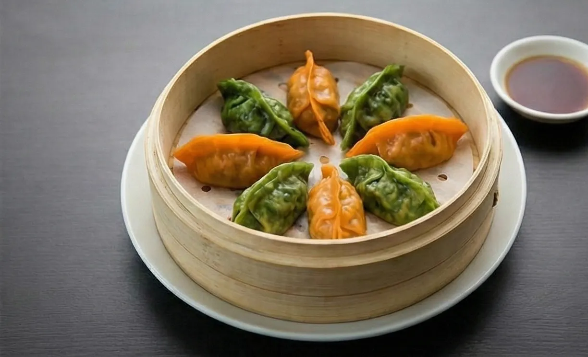
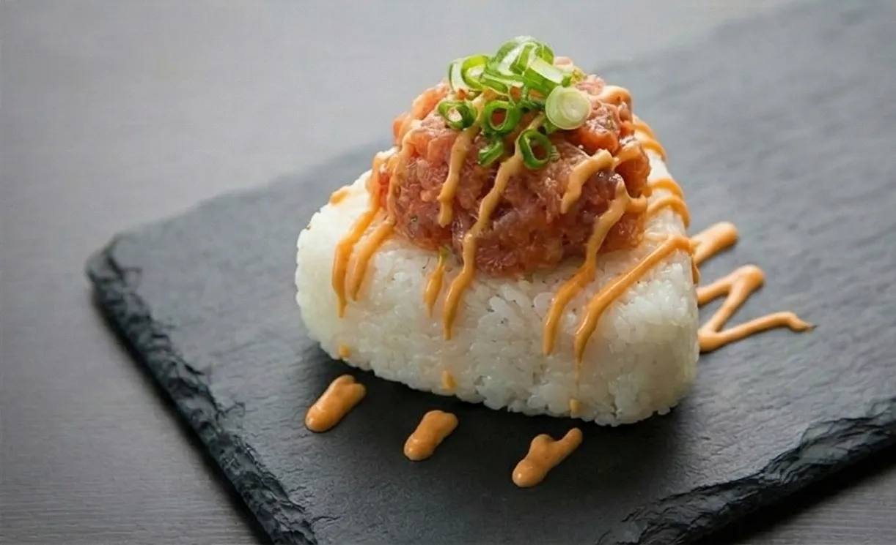
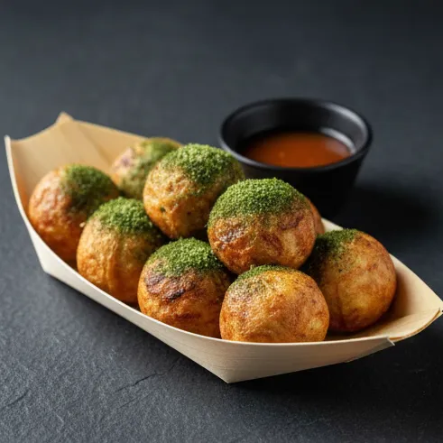
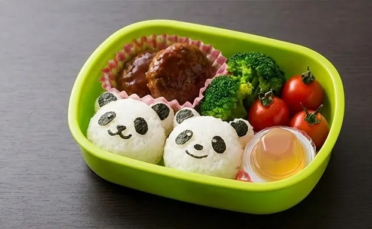
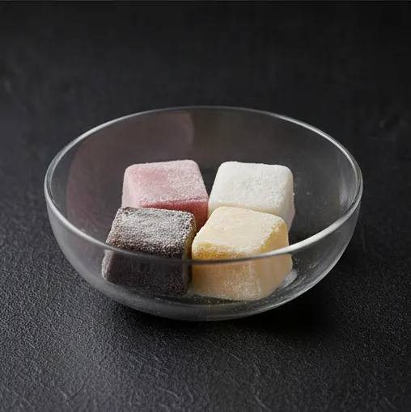
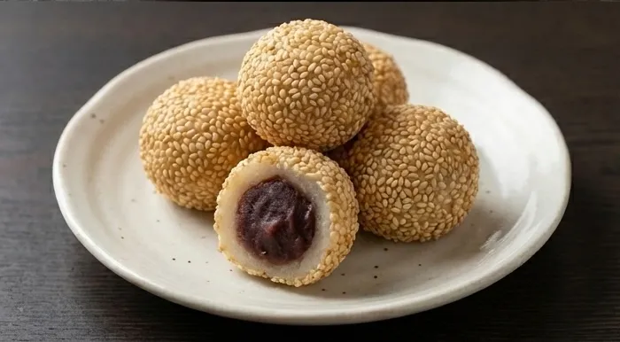
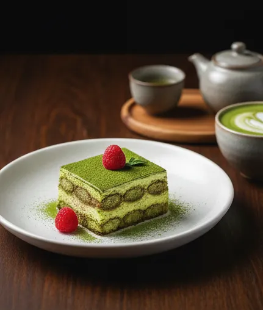

La Nova Sushi, credem că mâncarea este o experiență, nu doar o necesitate. Fie că ești un iubitor devotat de Sashimi și Nigiri, sau vrei să te încălzești cu un Ramen autentic și să savurezi o bere japoneză rece, meniul nostru este creat pentru a-ți răsfăța simțurile. Folosim doar ingrediente premium, pește proaspăt și tehnici de preparare care onorează cultura asiatică. Răsfoiește meniul nostru și pregătește-te pentru o călătorie culinară de neuitat.
Nu mai sta pe gânduri, comandă acum!Nova Sushi: Tradiție Japoneză, Gust Modern










Ce au de spus clienții noștri
Andrei M.
"Cel mai bun sushi din oraș! Peștele este incredibil de proaspăt și servirea impecabilă."
Elena P.
"Ramenul este exact ca în Japonia. Porții generoase și gust autentic."
Radu S.
"O experiență culinară deosebită. Recomand desertul cu matcha, este divin!"
Simona G.
"Atmosferă autentică și personal foarte amabil. Gyoza sunt absolut delicioase, exact cum am mâncat în Japonia!"
Marius T.
"Sashimi de somon se topește în gură. Un pic aglomerat în weekend, dar merită din plin așteptarea pentru calitatea oferită."
Ioana D.
"Am comandat un Bento Box și a fost peste așteptări. Totul proaspăt, bine ambalat și livrat rapid. Nota 10!"